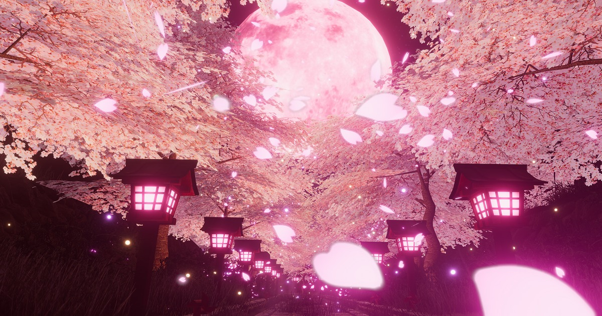
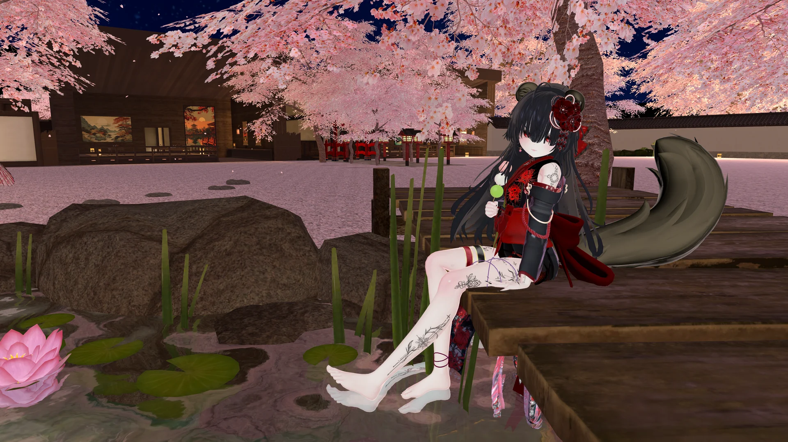

三椿と、桜の庭。ABOUT NINOUKYO
忍と妖の暮らす、
夜桜の郷。
時代や世界を越えて、
迷い人が辿り着く場所――忍桜郷。
ここでは、忍と妖が共に暮らしています。
言葉を交わし、舞台に心を寄せ、
いつもと少し違う夜をお過ごしください。
迷い込んだ人を迎え、もてなし、
そして、元の世界へ送り届ける。
そんなひと夜の物語を紡ぐ、和風RPイベントです。
YOUR FIRST VISIT
郷への道しるべ
初めての方も、久しぶりの方も。
お越しになる前に、当日の告知をご確認ください。
- BEFORE YOU VISIT
当日の告知を確かめる
開催日時・受付方法・参加条件は、公式Xでご案内しています。最新の告知をご確認ください。
最新のお知らせ（新しいタブ） - FIND YOUR WAY
受付から、桜並木へ
当日の案内に沿ってReq-In（招待リクエスト）をお送りください。受付を経て、桜並木から屋敷へご案内します。
- A NIGHT TO REMEMBER
語らい、演舞、そして見送り
住人たちとの語らいや舞台演目をお楽しみください。ひと夜の終わりには、皆さまをお見送りします。
※上記は参加の流れの一例です。抽選・受付方法など、当日の運用は公式Xの告知に準じます。
FAQ
よくあるご質問
- RPに慣れていなくても大丈夫？
- お客様のRPは必要ありません。
- 撮影は可能？
- 郷のお写真は他のお客様が写らなければご自由に撮っていただいてかまいません。


UNTIL WE MEET AGAIN
次の夜も、
桜の下で。
開催のお知らせや郷の便りは、公式Xにて。
皆さまが紡いだ思い出も、ハッシュタグからご覧いただけます。